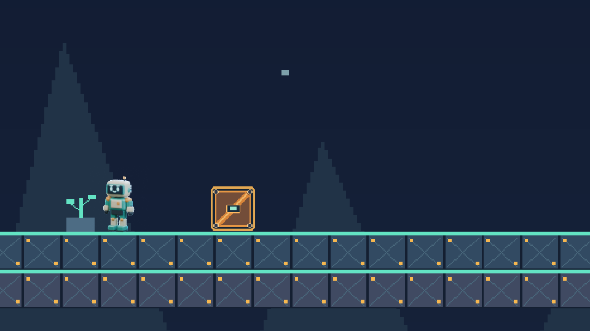
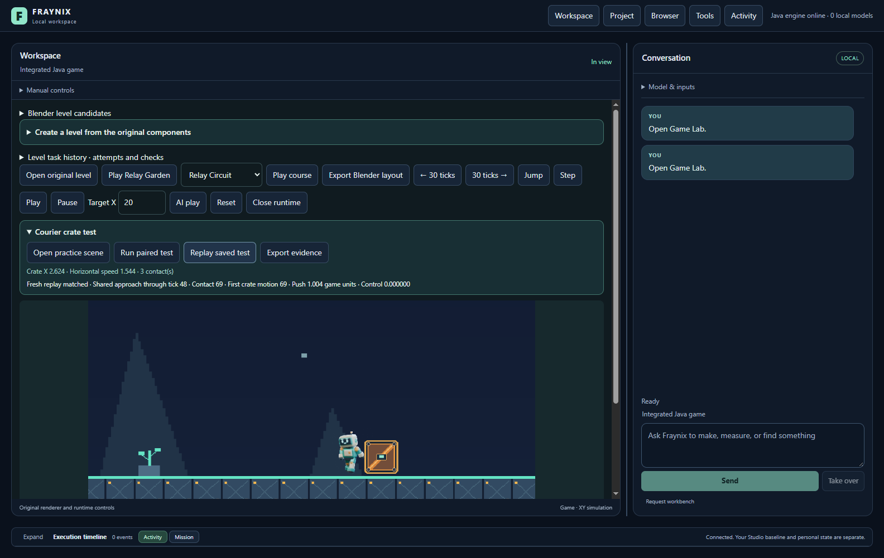
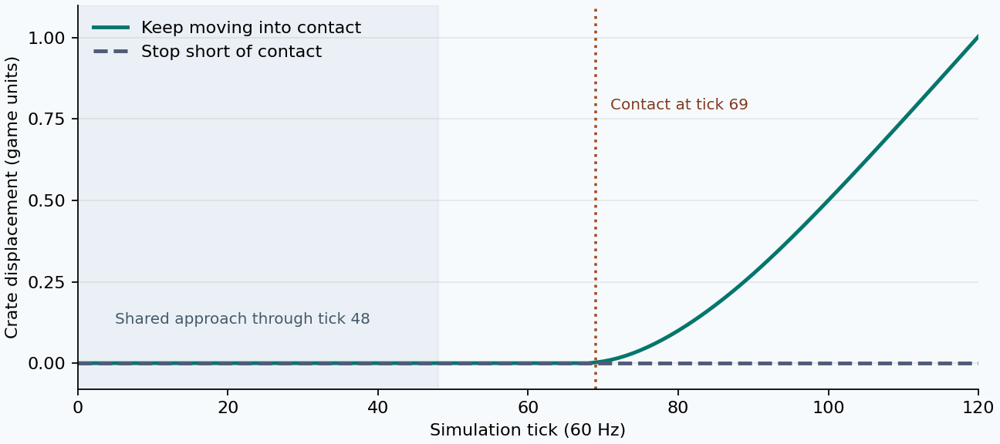

Prove the Courier pushes a crate after contact
Open Game Lab and choose Courier crate test. The paired trial records the native body positions, contact and impulse. Both traces replay after restart.

The Courier and the separate dynamic crate at the starting positions

Game Lab shows the matching native replay after an offline restart

Native crate displacement for the continued approach and the control that stops short
System files
Open source